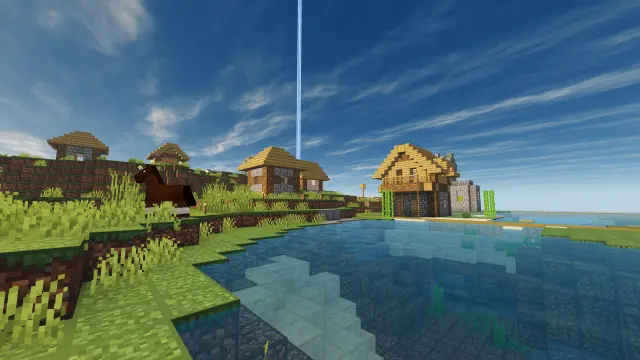
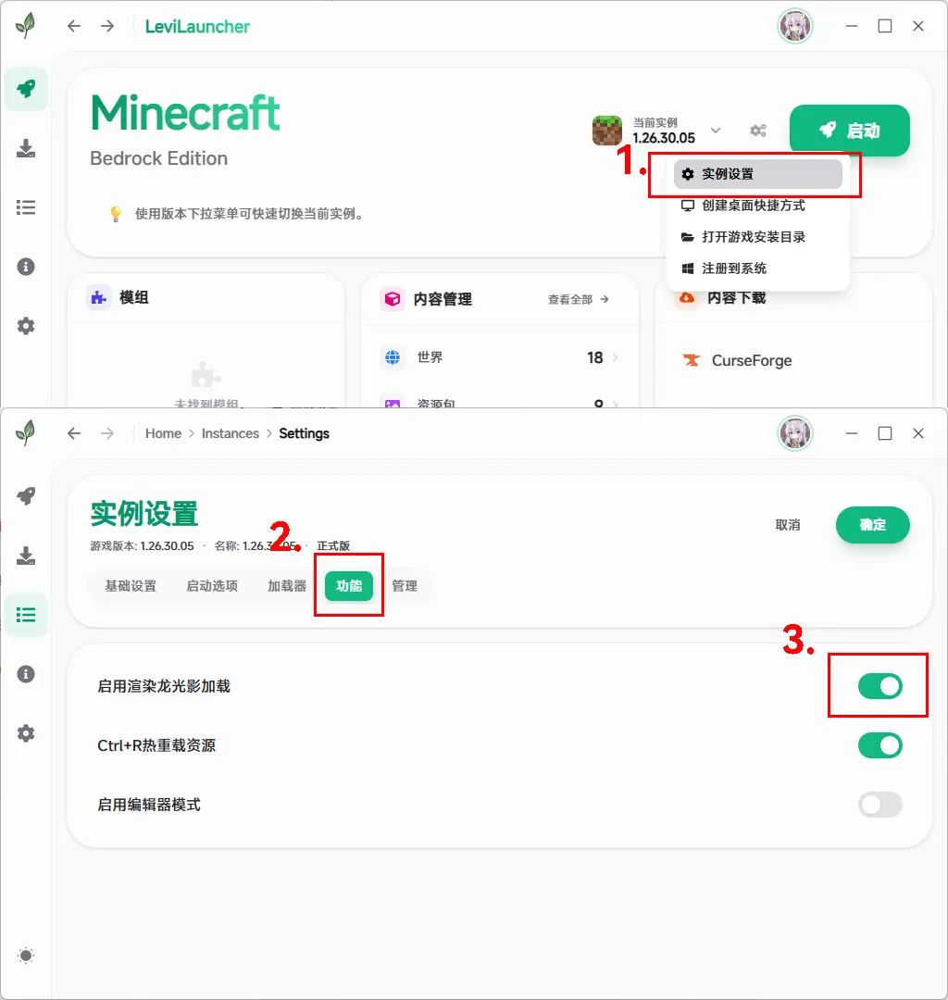
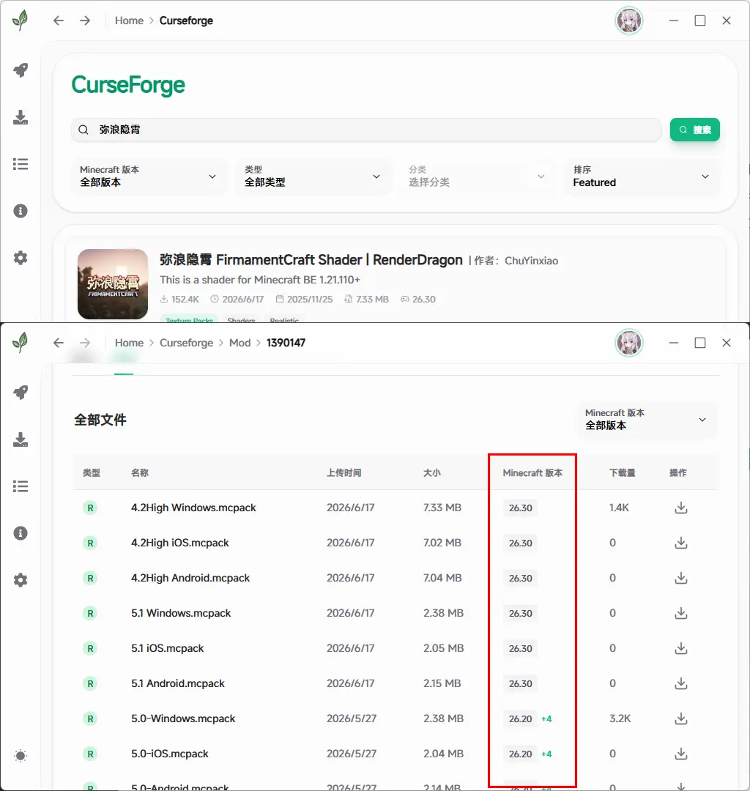
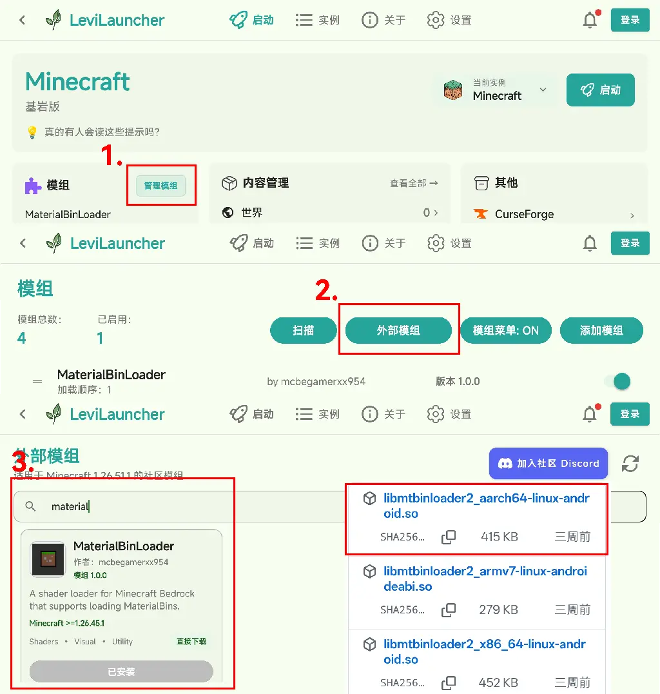
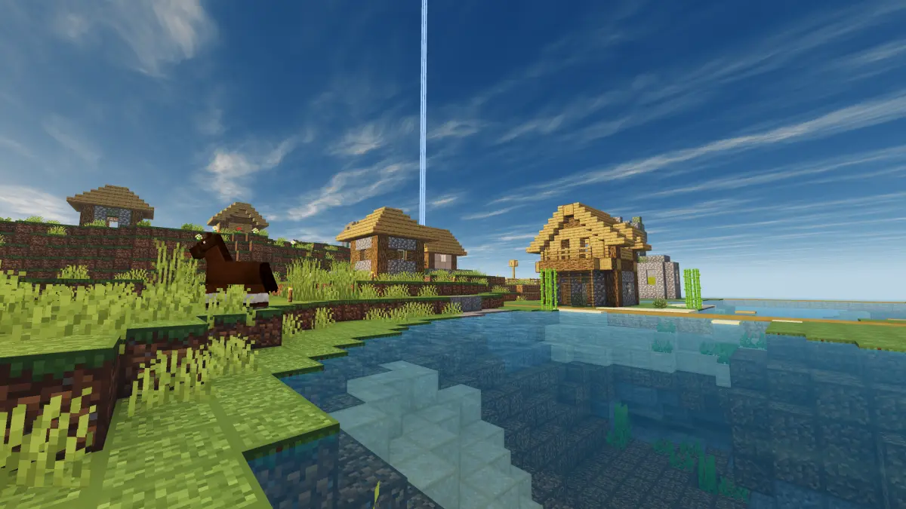

本教程适用于Windows、Android和iOS端的基岩版设备，安装第三方修改着色器的渲染龙光影和红区显文件，手动改包、注入法均有收录。
RenderDragon（渲染龙）是用于基岩版和教育版的新型跨平台渲染引擎，以取代老旧的 HAL 着色器。
作为原版视觉和性能升级的一部分， RenderDragon 具有一系列官方支持的图形功能，用于光线追踪和灵动视效。
而目前的红显等第三方渲染龙光影功能需要启动器或改包才能实现。接下来将介绍使用启动器、光影模组和改包开启第三方渲染龙光影的方法。
LeviLauncher 是一款 Windows 基岩版多版本管理工具和 Mod 平台，启动器内置了第三方渲染龙光影的加载能力。
下载地址↓
https://levilauncher.levimc.org/zh-CN/
使用步骤：


材质版本 游戏版本 //以下版本光影互不兼容
22 1.21.110
1.21.120
1.21.130
23 26.0
25 26.10
26.30
26 26.50值得注意的是，LeviLauncher 作为多版本管理工具，里面下载的游戏本体文件是可以直接修改的。着色器文件位于
%Appdata%\levilauncher.exe\versions\对应游戏版本\data\renderer\materials
手动替换对应版本的 xxx.bin 文件即可。
LeviLaunchroid 是一款 Android 基岩版多版本管理工具和 Mod 平台，本身不含光影加载，需再添加一款光影模组。
另外由于谷歌政策问题，LeviLaunchroid 加入了 Google Play 下载 Minecraft 的正版验证，以符合商店上架需要，意味着你手机里至少需要安装有一个正版游戏。
这对中国大陆地区无法购买手机正版 MC 的玩家造成了不便，所以我更推荐你使用解锁版 LeviLaunchroid Unlocked，解锁版无需验证正版游戏。
原版启动器 https://github.com/LiteLDev/LeviLaunchroid/releases
解锁版启动器 https://github.com/0Sombra666/LeviLaunchroidUnlocked/releases
光影模组一般用MaterialBinLoader2 https://github.com/mcbegamerxx954/mtbinloader2/releases
Tips：根据你手机架构下载.so文件，新手机armv8基本就用aarch64那个，特别老的手机用armv7，特殊手机用x86_64。GitHub在非工作时间段更容易访问。
使用步骤：

MB Loader 是一款 Android 基岩版光影加载器，可以在 Play 商店下载，使用 MBL2 启动后，游戏会读取全局资源包中的着色器文件以加载光影。
更多信息可以加入 YSS Discord server 了解，这里不再赘述。
https://discord.com/invite/UJdvR6WBAe
Hynis Loader 是一款 iOS 基岩版光影加载器，启动后游戏会读取全局资源包中的着色器文件以加载光影。
[震撼首发]在iOS注入MCBE全新插件，平替改包+可登账号+120Hz！
越狱设备安装方法
如果你的 iOS 设备已越狱，安装 HynisLoader 最为简便。
下载地址 ↓
https://github.com/congcq/HynisLoader/releases
使用步骤：
非越狱设备安装方法
非越狱设备需要通过注入 dylib 或使用修改版 IPA 来实现。
当然，最省事的方式就是直接下载已经集成好 HynisLoader 的修改版 Minecraft IPA。
加入 Newb Discord Server，在 #mc-hynis-ios 频道中下载已集成 Hynis 的 Minecraft IPA 文件。
https://discord.com/invite/fdKbYyacCc
类似上边 iOS 修改安装包 IPA 的形式，我们也可以对原版游戏 Android 安装包执行类似操作，得到一个可以装载光影的改包 APK。
改包步骤：
const-string v0, "mtbinloader2"
invoke-static {v0}, Ljava/lang/System;->loadLibrary(Ljava/lang/String;)V保存修改并退出，选择 自动签名 ，然后安装游戏即可。
这样的安装包可以直接读取全局资源包中的第三方渲染龙光影。
其实还可以更暴力一点：直接把 xxx.bin 文件插入游戏中，替换原版文件 data\renderer\materials 中的对应文件，再自动签名。
这样不需要任何光影模组，但你也不能开关或改变光影，现在游戏工具很多，非常不建议这么做。
如果你是电脑上装的是官方老版本的 Minecraft UWP 版，就不能直接上手修改了，还需要利用 IObit Unlocker 解锁操作权限，再手动删除复制文件，此方法已过时，非常不建议这样做。

渲染龙光影完整清单请大家浏览我的网站查看~